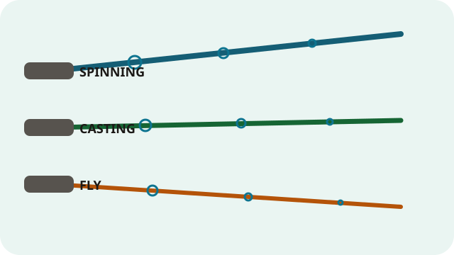
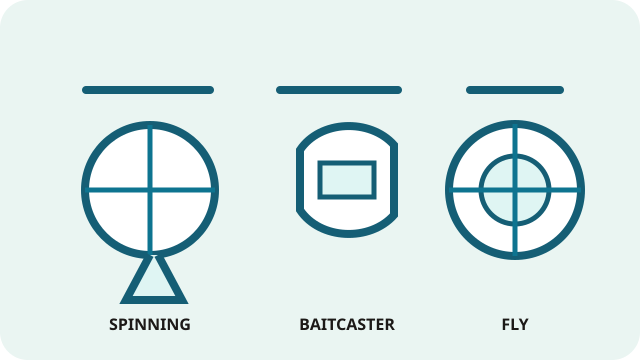
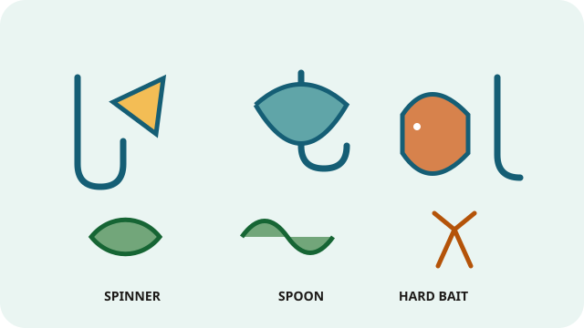
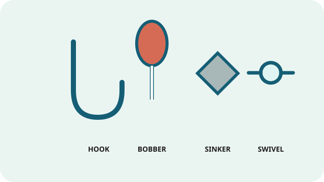
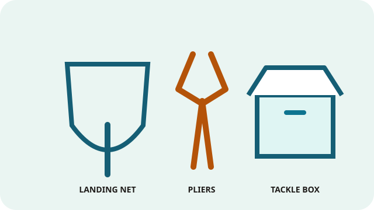

Fishing Gear Guide
Start with a gear category to see what each item does, how to choose it, and which Southern Oregon fish it suits. These are starting points, not rules: match the rod, reel, line, and local regulations to the water you plan to fish.
Build a setup for your target fish View planning cart
Choose a category

RodsLength, power, action, and rod styles.
ReelsSpinning sizes 1000–6000, baitcasters, and fly reels. LineLine materials, strengths, leaders, and fly line.
LineLine materials, strengths, leaders, and fly line.

Lures & fliesMatch a lure or fly to the fish and water.
TackleHooks, weights, bobbers, swivels, and leaders.
EssentialsUseful tools, safety items, and trip basics.A simple setup to start
For many stocked trout ponds, try a 6–7 foot light spinning rod, a 1000–2500 spinning reel, and 4–8 lb monofilament. For bass, a medium spinning setup with 8–12 lb line is a flexible choice. The right setup still depends on cover, current, lure weight, and the fish you expect.